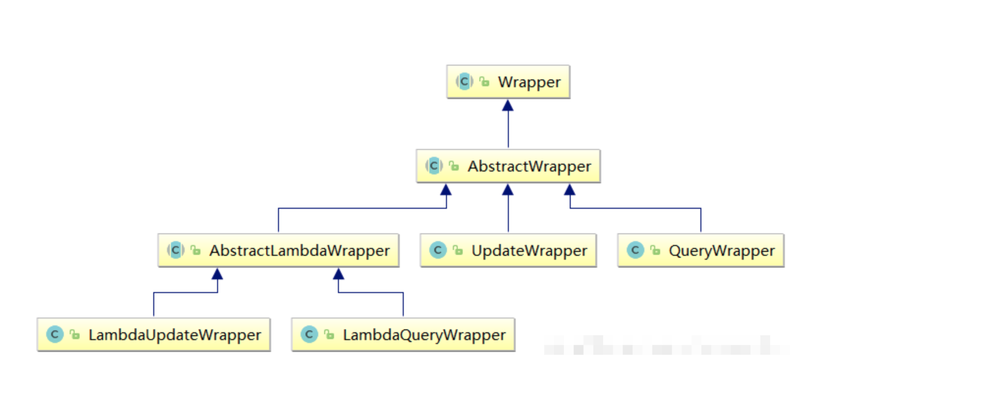
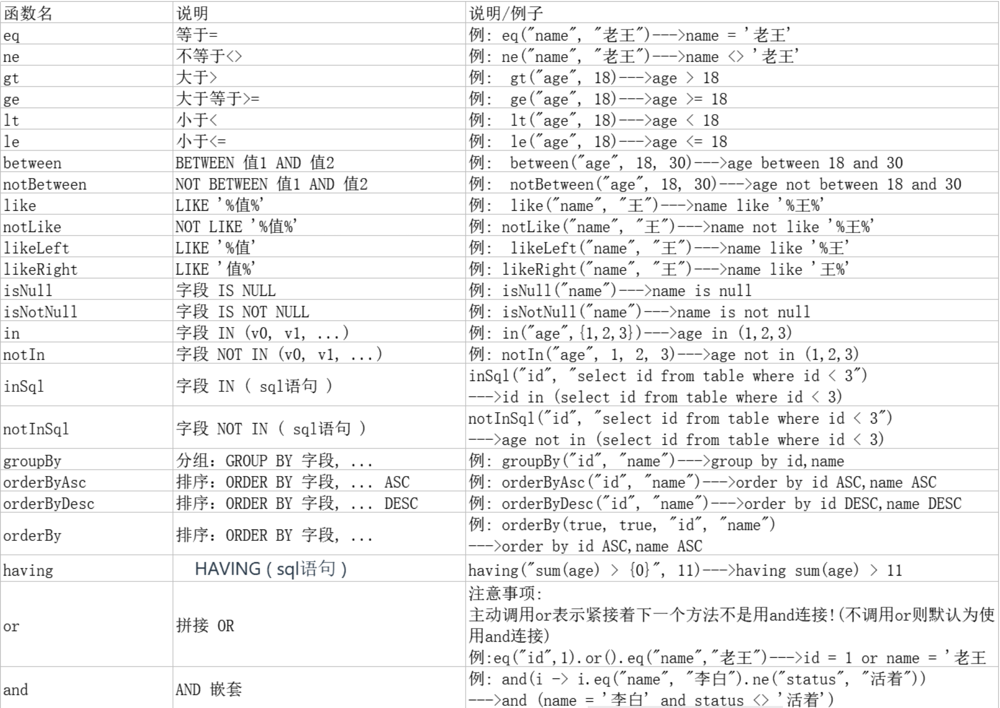
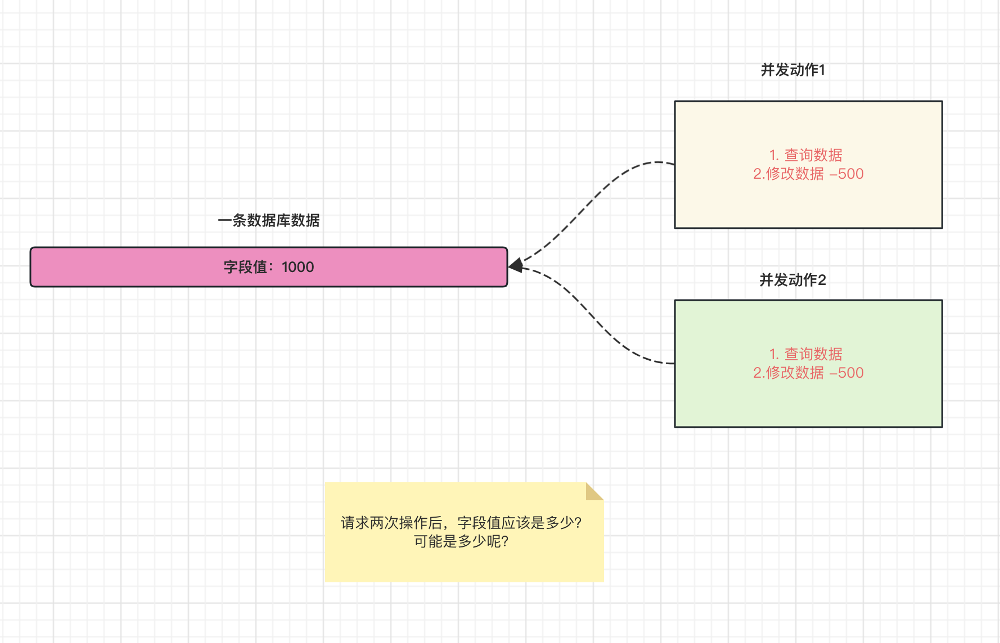
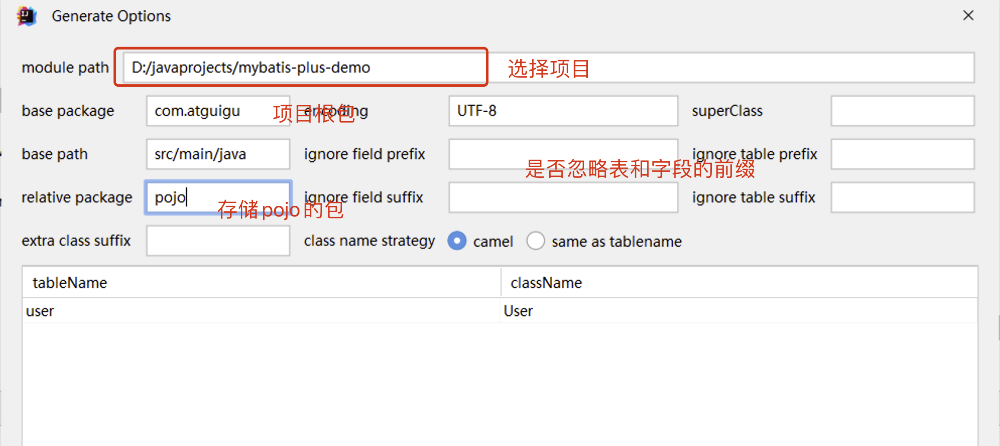

MyBatis-Plus 使用实践指南，涵盖基于 Mapper 与 Service 的 CRUD 操作、条件构造器详解、核心注解用法、分页与插件机制，以及 MyBatis-X 逆向工程等高级功能，助力高效构建企业级持久层架构。
一、MyBatis-Plus快速入门
1.1 简介
课程版本：3.5.3.1
MyBatis-Plus [ (opens new window)](https://github.com/baomidou/mybatis-plus ” (opens new window)“)（简称 MP）是一个 MyBatis [ (opens new window)](https://www.mybatis.org/mybatis-3/” (opens new window)“) 的增强工具，在 MyBatis 的基础上只做增强不做改变，为简化开发、提高效率而生。
特性：
- 无侵入：只做增强不做改变，引入它不会对现有工程产生影响，如丝般顺滑
- 损耗小：启动即会自动注入基本 CURD，性能基本无损耗，直接面向对象操作
- 强大的 CRUD 操作：内置通用 Mapper、通用 Service，仅仅通过少量配置即可实现单表大部分 CRUD 操作，更有强大的条件构造器，满足各类使用需求
- 支持 Lambda 形式调用：通过 Lambda 表达式，方便的编写各类查询条件，无需再担心字段写错
- 支持主键自动生成：支持多达 4 种主键策略（内含分布式唯一 ID 生成器 - Sequence），可自由配置，完美解决主键问题
- 支持 ActiveRecord 模式：支持 ActiveRecord 形式调用，实体类只需继承 Model 类即可进行强大的 CRUD 操作
- 支持自定义全局通用操作：支持全局通用方法注入（ Write once, use anywhere ）
- 内置代码生成器：采用代码或者 Maven 插件可快速生成 Mapper 、 Model 、 Service 、 Controller 层代码，支持模板引擎，更有超多自定义配置等您来使用
- 内置分页插件：基于 MyBatis 物理分页，开发者无需关心具体操作，配置好插件之后，写分页等同于普通 List 查询
- 分页插件支持多种数据库：支持 MySQL、MariaDB、Oracle、DB2、H2、HSQL、SQLite、Postgre、SQLServer 等多种数据库
- 内置性能分析插件：可输出 SQL 语句以及其执行时间，建议开发测试时启用该功能，能快速揪出慢查询
- 内置全局拦截插件：提供全表 delete 、 update 操作智能分析阻断，也可自定义拦截规则，预防误操作
支持数据库：
- MySQL，Oracle，DB2，H2，HSQL，SQLite，PostgreSQL，SQLServer，Phoenix，Gauss ，ClickHouse，Sybase，OceanBase，Firebird，Cubrid，Goldilocks，csiidb，informix，TDengine，redshift
- 达梦数据库，虚谷数据库，人大金仓数据库，南大通用(华库)数据库，南大通用数据库，神通数据库，瀚高数据库，优炫数据库
mybatis-plus总结：
自动生成单表的CRUD功能
提供丰富的条件拼接方式
全自动ORM类型持久层框架
1.2 快速入门
准备数据库脚本
现有一张
User表，其表结构如下：id name age email 1 Jone 18 test1@baomidou.com 2 Jack 20 test2@baomidou.com 3 Tom 28 test3@baomidou.com 4 Sandy 21 test4@baomidou.com 5 Billie 24 test5@baomidou.com 1
2
3
4
5
6
7
8
9
10
11
12
13
14
15
16DROP TABLE IF EXISTS user;
CREATE TABLE user
(
id BIGINT(20) NOT NULL COMMENT '主键ID',
name VARCHAR(30) NULL DEFAULT NULL COMMENT '姓名',
age INT(11) NULL DEFAULT NULL COMMENT '年龄',
email VARCHAR(50) NULL DEFAULT NULL COMMENT '邮箱',
PRIMARY KEY (id)
);
INSERT INTO user (id, name, age, email) VALUES
(1, 'Jone', 18, 'test1@baomidou.com'),
(2, 'Jack', 20, 'test2@baomidou.com'),
(3, 'Tom', 28, 'test3@baomidou.com'),
(4, 'Sandy', 21, 'test4@baomidou.com'),
(5, 'Billie', 24, 'test5@baomidou.com');准备boot工程
导入依赖
1
2
3
4
5
6
7
8
9
10
11
12
13
14
15
16
17
18
19
20
21
22
23
24
25
26
27
28
29
30
31
32
33
34
35
36
37
38
39
40
41
42
43
44
45
46
47
48
49
50
51
52
53
54
55
56
57
58
59
60
61
62
63
64
65
66
67
68
69
70
71
72
73
74
75
76
77
<project xmlns="http://maven.apache.org/POM/4.0.0"
xmlns:xsi="http://www.w3.org/2001/XMLSchema-instance"
xsi:schemaLocation="http://maven.apache.org/POM/4.0.0 http://maven.apache.org/xsd/maven-4.0.0.xsd">
<modelVersion>4.0.0</modelVersion>
<parent>
<groupId>org.springframework.boot</groupId>
<artifactId>spring-boot-starter-parent</artifactId>
<version>3.0.5</version>
</parent>
<groupId>com.atguigu</groupId>
<artifactId>springboot-starter-mybatis-plus-06</artifactId>
<version>1.0-SNAPSHOT</version>
<properties>
<maven.compiler.source>17</maven.compiler.source>
<maven.compiler.target>17</maven.compiler.target>
<project.build.sourceEncoding>UTF-8</project.build.sourceEncoding>
</properties>
<dependencies>
<dependency>
<groupId>org.springframework.boot</groupId>
<artifactId>spring-boot-starter</artifactId>
</dependency>
<!-- 测试环境 -->
<dependency>
<groupId>org.springframework.boot</groupId>
<artifactId>spring-boot-starter-test</artifactId>
</dependency>
<!-- mybatis-plus -->
<dependency>
<groupId>com.baomidou</groupId>
<artifactId>mybatis-plus-boot-starter</artifactId>
<version>3.5.3.1</version>
</dependency>
<!-- 数据库相关配置启动器 -->
<dependency>
<groupId>org.springframework.boot</groupId>
<artifactId>spring-boot-starter-jdbc</artifactId>
</dependency>
<!-- druid启动器的依赖 -->
<dependency>
<groupId>com.alibaba</groupId>
<artifactId>druid-spring-boot-3-starter</artifactId>
<version>1.2.18</version>
</dependency>
<!-- 驱动类-->
<dependency>
<groupId>mysql</groupId>
<artifactId>mysql-connector-java</artifactId>
<version>8.0.28</version>
</dependency>
<dependency>
<groupId>org.projectlombok</groupId>
<artifactId>lombok</artifactId>
<version>1.18.28</version>
</dependency>
</dependencies>
<!-- SpringBoot应用打包插件-->
<build>
<plugins>
<plugin>
<groupId>org.springframework.boot</groupId>
<artifactId>spring-boot-maven-plugin</artifactId>
</plugin>
</plugins>
</build>
</project>配置文件和启动类
application.yaml
1
2
3
4
5
6
7
8
9# 连接池配置
spring:
datasource:
type: com.alibaba.druid.pool.DruidDataSource
druid:
url: jdbc:mysql:///day01
username: root
password: root
driver-class-name: com.mysql.cj.jdbc.Driver启动类
1
2
3
4
5
6
7
8
9
public class MainApplication {
public static void main(String[] args) {
SpringApplication.run(MainApplication.class,args);
}
}功能编码
编写实体类
User.java（此处使用了 Lombok [ ](https://www.projectlombok.org/ ” “)简化代码）1
2
3
4
5
6
7
public class User {
private Long id;
private String name;
private Integer age;
private String email;
}编写 Mapper 包下的
UserMapper接口1
2
3public interface UserMapper extends BaseMapper<User> {
}继承mybatis-plus提供的基础Mapper接口，自带crud方法！
测试和使用
添加测试类，进行功能测试：
1
2
3
4
5
6
7
8
9
10
11
12
13//springboot下测试环境注解
public class SampleTest {
private UserMapper userMapper;
public void testSelect() {
System.out.println(("----- selectAll method test ------"));
List<User> userList = userMapper.selectList(null);
userList.forEach(System.out::println);
}
}小结
通过以上几个简单的步骤，我们就实现了 User 表的 CRUD 功能，甚至连 XML 文件都不用编写！
从以上步骤中，我们可以看到集成
MyBatis-Plus非常的简单，只需要引入 starter 工程，并配置 mapper 扫描路径即可。
二、MyBatis-Plus核心功能
2.1 基于Mapper接口CRUD
通用 CRUD 封装BaseMapper (opens new window)接口，
Mybatis-Plus启动时自动解析实体表关系映射转换为Mybatis内部对象注入容器! 内部包含常见的单表操作！
Insert方法
1 | // 插入一条记录 |
| 类型 | 参数名 | 描述 |
|---|---|---|
| T | entity | 实体对象 |
Delete方法
1 | // 根据 entity 条件，删除记录 |
| 类型 | 参数名 | 描述 |
|---|---|---|
| Wrapper<T> | wrapper | 实体对象封装操作类（可以为 null） |
| Collection<? extends Serializable> | idList | 主键 ID 列表(不能为 null 以及 empty) |
| Serializable | id | 主键 ID |
| Map<String, Object> | columnMap | 表字段 map 对象 |
Update方法
1 | // 根据 whereWrapper 条件，更新记录 |
| 类型 | 参数名 | 描述 |
|---|---|---|
| T | entity | 实体对象 (set 条件值,可为 null) |
| Wrapper<T> | updateWrapper | 实体对象封装操作类（可以为 null,里面的 entity 用于生成 where 语句） |
Select方法
1 | // 根据 ID 查询 |
参数说明
| 类型 | 参数名 | 描述 |
|---|---|---|
| Serializable | id | 主键 ID |
| Wrapper<T> | queryWrapper | 实体对象封装操作类（可以为 null） |
| Collection<? extends Serializable> | idList | 主键 ID 列表(不能为 null 以及 empty) |
| Map<String, Object> | columnMap | 表字段 map 对象 |
| IPage<T> | page | 分页查询条件（可以为 RowBounds.DEFAULT） |
自定义和多表映射
mybatis-plus的默认mapperxml位置
1 | mybatis-plus: # mybatis-plus的配置 |
自定义mapper方法：
1 | public interface UserMapper extends BaseMapper<User> { |
基于mapper.xml实现：
1 |
|
2.2 基于Service接口CRUD
通用 Service CRUD 封装IService接口，进一步封装 CRUD
采用 get 查询单行 remove 删除
list 查询集合 page 分页 前缀命名方式区分
Mapper 层避免混淆，
对比Mapper接口CRUD区别：
- service添加了批量方法
- service层的方法自动添加事务
使用Iservice接口方式
接口继承IService接口
1 | public interface UserService extends IService<User> { |
类继承ServiceImpl实现类
1 |
|
CRUD方法介绍
1 | 保存： |
2.3 分页查询实现
导入分页插件
1
2
3
4
5
6
public MybatisPlusInterceptor mybatisPlusInterceptor() {
MybatisPlusInterceptor interceptor = new MybatisPlusInterceptor();
interceptor.addInnerInterceptor(new PaginationInnerInterceptor(DbType.MYSQL));
return interceptor;
}使用分页查询
1
2
3
4
5
6
7
8
9
10
11
12
13
14
15
public void testPageQuery(){
//设置分页参数
Page<User> page = new Page<>(1, 5);
userMapper.selectPage(page, null);
//获取分页数据
List<User> list = page.getRecords();
list.forEach(System.out::println);
System.out.println("当前页："+page.getCurrent());
System.out.println("每页显示的条数："+page.getSize());
System.out.println("总记录数："+page.getTotal());
System.out.println("总页数："+page.getPages());
System.out.println("是否有上一页："+page.hasPrevious());
System.out.println("是否有下一页："+page.hasNext());
}自定义的mapper方法使用分页
1
2
3//传入参数携带Ipage接口
//返回结果为IPage
IPage<User> selectPageVo(IPage<?> page, Integer id);1
2
3<select id="selectPageVo" resultType="xxx.xxx.xxx.User">
SELECT * FROM user WHERE id > #{id}
</select>1
2
3
4
5
6
7
8
9
10
11
12
13
14
15
16
17
public void testQuick(){
IPage page = new Page(1,2);
userMapper.selectPageVo(page,2);
long current = page.getCurrent();
System.out.println("current = " + current);
long pages = page.getPages();
System.out.println("pages = " + pages);
long total = page.getTotal();
System.out.println("total = " + total);
List records = page.getRecords();
System.out.println("records = " + records);
}
2.4 条件构造器使用
2.4.1 条件构造器作用
实例代码：
1 | QueryWrapper<User> queryWrapper = new QueryWrapper<>(); |
使用MyBatis-Plus的条件构造器，你可以构建灵活、高效的查询条件，而不需要手动编写复杂的 SQL 语句。它提供了许多方法来支持各种条件操作符，并且可以通过链式调用来组合多个条件。这样可以简化查询的编写过程，并提高开发效率。
2.4.2 条件构造器继承结构
条件构造器类结构：

Wrapper ： 条件构造抽象类，最顶端父类
- AbstractWrapper ： 用于查询条件封装，生成 sql 的 where 条件
- QueryWrapper ： 查询/删除条件封装
- UpdateWrapper ： 修改条件封装
- AbstractLambdaWrapper ： 使用Lambda 语法
- LambdaQueryWrapper
- LambdaUpdateWrapper
2.4.3 基于QueryWrapper 组装条件

组装查询条件：
1 |
|
组装排序条件:
1 |
|
组装删除条件:
1 |
|
and和or关键字使用(修改)：
1 |
|
指定列映射查询：
1 |
|
condition判断组织条件:
1 |
|
2.3.4 基于 UpdateWrapper组装条件
使用queryWrapper:
1 |
|
注意：使用queryWrapper + 实体类形式可以实现修改，但是无法将列值修改为null值！
使用updateWrapper:
1 |
|
使用updateWrapper可以随意设置列的值！！
2.3.5 基于LambdaQueryWrapper组装条件
1. LambdaQueryWrapper对比QueryWrapper优势
QueryWrapper 示例代码：
1 | QueryWrapper<User> queryWrapper = new QueryWrapper<>(); |
LambdaQueryWrapper 示例代码：
1 | LambdaQueryWrapper<User> lambdaQueryWrapper = new LambdaQueryWrapper<>(); |
从上面的代码对比可以看出，相比于 QueryWrapper，LambdaQueryWrapper
使用了实体类的属性引用（例如
User::getName、User::getAge），而不是字符串来表示字段名，这提高了代码的可读性和可维护性。
2. lambda表达式回顾
Lambda 表达式是 Java 8 引入的一种函数式编程特性，它提供了一种更简洁、更直观的方式来表示匿名函数或函数式接口的实现。Lambda 表达式可以用于简化代码，提高代码的可读性和可维护性。
Lambda 表达式的语法可以分为以下几个部分：
参数列表： 参数列表用小括号
()括起来，可以指定零个或多个参数。如果没有参数，可以省略小括号；如果只有一个参数，可以省略小括号。示例：
(a, b),x ->,() ->箭头符号： 箭头符号
->分割参数列表和 Lambda 表达式的主体部分。示例：
->Lambda 表达式的主体： Lambda 表达式的主体部分可以是一个表达式或一个代码块。如果是一个表达式，可以省略 return 关键字；如果是多条语句的代码块，需要使用大括号
{}括起来，并且需要明确指定 return 关键字。示例：
- 单个表达式：
x -> x * x - 代码块：
(x, y) -> { int sum = x + y; return sum; }
- 单个表达式：
Lambda 表达式的语法可以更具体地描述如下：
1 | // 使用 Lambda 表达式实现一个接口的方法 |
3. 方法引用回顾:
方法引用是 Java 8 中引入的一种语法特性，它提供了一种简洁的方式来直接引用已有的方法或构造函数。方法引用可以替代 Lambda 表达式，使代码更简洁、更易读。
Java 8 支持以下几种方法引用的形式：
- 静态方法引用： 引用静态方法，语法为
类名::静态方法名。 - 实例方法引用： 引用实例方法，语法为
实例对象::实例方法名。 - 对象方法引用： 引用特定对象的实例方法，语法为
类名::实例方法名。 - 构造函数引用： 引用构造函数，语法为
类名::new。
演示代码:
1 | import java.util.Arrays; |
2.3.6 基于LambdaUpdateWrapper组装条件
使用案例:
1 |
|
2.5 核心注解使用
理解和介绍
MyBatis-Plus是一个基于MyBatis框架的增强工具，提供了一系列简化和增强的功能，用于加快开发人员在使用MyBatis进行数据库访问时的效率。
MyBatis-Plus提供了一种基于注解的方式来定义和映射数据库操作，其中的注解起到了重要作用。
理解：
1
2
3public interface UserMapper extends BaseMapper<User> {
}此接口对应的方法为什么会自动触发 user表的crud呢？
默认情况下， 根据指定的<实体类>的名称对应数据库表名，属性名对应数据库的列名！
但是不是所有数据库的信息和实体类都完全映射！
例如： 表名 t_user → 实体类 User 这时候就不对应了！
自定义映射关系就可以使用mybatis-plus提供的注解即可！
@TableName注解
- 描述：表名注解，标识实体类对应的表
- 使用位置：实体类
1
2
3
4
5
6
7//对应数据库表名
public class User {
private Long id;
private String name;
private Integer age;
private String email;
}特殊情况：如果表名和实体类名相同（忽略大小写）可以省略该注解！
其他解决方案：全局设置前缀 (https://www.baomidou.com/pages/56bac0/#基本配置)
1
2
3
4mybatis-plus: # mybatis-plus的配置
global-config:
db-config:
table-prefix: sys_ # 表名前缀字符串@TableId 注解
- 描述：主键注解
- 使用位置：实体类主键字段
1
2
3
4
5
6
7
8
public class User {
private Long id;
private String name;
private Integer age;
private String email;
}1
2
3
4
5
6
7
8
9
10mybatis-plus:
configuration:
# 配置MyBatis日志
log-impl: org.apache.ibatis.logging.stdout.StdOutImpl
global-config:
db-config:
# 配置MyBatis-Plus操作表的默认前缀
table-prefix: t_
# 配置MyBatis-Plus的主键策略
id-type: auto在以下场景下，添加
@TableId注解是必要的：- 实体类的字段与数据库表的主键字段不同名：如果实体类中的字段与数据库表的主键字段不一致，需要使用
@TableId注解来指定实体类中表示主键的字段。 - 主键生成策略不是默认策略：如果需要使用除了默认主键生成策略以外的策略，也需要添加
@TableId注解，并通过value属性指定生成策略。
雪花算法使用场景
雪花算法（Snowflake Algorithm）是一种用于生成唯一ID的算法。它由Twitter公司提出，用于解决分布式系统中生成全局唯一ID的需求。
在传统的自增ID生成方式中，使用单点数据库生成ID会成为系统的瓶颈，而雪花算法通过在分布式系统中生成唯一ID，避免了单点故障和性能瓶颈的问题。
雪花算法生成的ID是一个64位的整数，由以下几个部分组成：
- 时间戳：41位，精确到毫秒级，可以使用69年。
- 节点ID：10位，用于标识分布式系统中的不同节点。
- 序列号：12位，表示在同一毫秒内生成的不同ID的序号。 通过将这三个部分组合在一起，雪花算法可以在分布式系统中生成全局唯一的ID，并保证ID的生成顺序性。 雪花算法的工作方式如下：
- 当前时间戳从某一固定的起始时间开始计算，可以用于计算ID的时间部分。
- 节点ID是分布式系统中每个节点的唯一标识，可以通过配置或自动分配的方式获得。
- 序列号用于记录在同一毫秒内生成的不同ID的序号，从0开始自增，最多支持4096个ID生成。 需要注意的是，雪花算法依赖于系统的时钟，需要确保系统时钟的准确性和单调性，否则可能会导致生成的ID不唯一或不符合预期的顺序。 雪花算法是一种简单但有效的生成唯一ID的算法，广泛应用于分布式系统中，如微服务架构、分布式数据库、分布式锁等场景，以满足全局唯一标识的需求。
你需要记住的: 雪花算法生成的数字,需要使用Long 或者 String类型主键!!
@TableField
描述：字段注解（非主键）
1
2
3
4
5
6
7
8
9
public class User {
private Long id;
private String name;
private Integer age;
private String email;
}MyBatis-Plus会自动开启驼峰命名风格映射!!!
三、MyBatis-Plus高级扩展
3.1 逻辑删除实现
概念:
逻辑删除，可以方便地实现对数据库记录的逻辑删除而不是物理删除。逻辑删除是指通过更改记录的状态或添加标记字段来模拟删除操作，从而保留了删除前的数据，便于后续的数据分析和恢复。
- 物理删除：真实删除，将对应数据从数据库中删除，之后查询不到此条被删除的数据
- 逻辑删除：假删除，将对应数据中代表是否被删除字段的状态修改为“被删除状态”，之后在数据库中仍旧能看到此条数据记录
逻辑删除实现:
数据库和实体类添加逻辑删除字段
表添加逻辑删除字段
可以是一个布尔类型、整数类型或枚举类型。
1
ALTER TABLE USER ADD deleted INT DEFAULT 0 ; # int 类型 1 逻辑删除 0 未逻辑删除
实体类添加逻辑删除属性
1
2
3
4
5
6
7
8
9
10
11
public class User {
// @TableId
private Integer id;
private String name;
private Integer age;
private String email;
//逻辑删除字段 int mybatis-plus下,默认 逻辑删除值为1 未逻辑删除 0
private Integer deleted;
}
指定逻辑删除字段和属性值
单一指定
1
2
3
4
5
6
7
8
9
10
11
12
public class User {
// @TableId
private Integer id;
private String name;
private Integer age;
private String email;
//逻辑删除字段 int mybatis-plus下,默认 逻辑删除值为1 未逻辑删除0
private Integer deleted;
}全局指定
1
2
3
4
5
6mybatis-plus:
global-config:
db-config:
logic-delete-field: deleted # 全局逻辑删除的实体字段名(since 3.3.0,配置后可以不配置步骤2)
logic-delete-value: 1 # 逻辑已删除值(默认为 1)
logic-not-delete-value: 0 # 逻辑未删除值(默认为 0)
演示逻辑删除操作
逻辑删除以后,没有真正的删除语句,删除改为修改语句!
1 | //逻辑删除 |
执行效果:
JDBC Connection [com.alibaba.druid.proxy.jdbc.ConnectionProxyImpl@5871a482] will not be managed by Spring ==> Preparing: UPDATE user SET deleted=1 WHERE id=? AND deleted=0 ==> Parameters: 5(Integer) <== Updates: 1
测试查询数据
1
2
3
4
5
6
public void testQuick6(){
//正常查询.默认查询非逻辑删除数据
userMapper.selectList(null);
}
//SELECT id,name,age,email,deleted FROM user WHERE deleted=0
3.2 乐观锁实现
3.2.1 悲观锁和乐观锁场景和介绍
并发问题场景演示:

乐观锁和悲观锁是在并发编程中用于处理并发访问和资源竞争的两种不同的锁机制!!
悲观锁： 悲观锁的基本思想是，在整个数据访问过程中，将共享资源锁定，以确保其他线程或进程不能同时访问和修改该资源。悲观锁的核心思想是”先保护，再修改”。在悲观锁的应用中，线程在访问共享资源之前会获取到锁，并在整个操作过程中保持锁的状态，阻塞其他线程的访问。只有当前线程完成操作后，才会释放锁，让其他线程继续操作资源。这种锁机制可以确保资源独占性和数据的一致性，但是在高并发环境下，悲观锁的效率相对较低。
乐观锁： 乐观锁的基本思想是，认为并发冲突的概率较低，因此不需要提前加锁，而是在数据更新阶段进行冲突检测和处理。乐观锁的核心思想是”先修改，后校验”。在乐观锁的应用中，线程在读取共享资源时不会加锁，而是记录特定的版本信息。当线程准备更新资源时，会先检查该资源的版本信息是否与之前读取的版本信息一致，如果一致则执行更新操作，否则说明有其他线程修改了该资源，需要进行相应的冲突处理。乐观锁通过避免加锁操作，提高了系统的并发性能和吞吐量，但是在并发冲突较为频繁的情况下，乐观锁会导致较多的冲突处理和重试操作。
理解点: 悲观锁和乐观锁是两种解决并发数据问题的思路,不是具体技术!!!
具体技术和方案:
- 乐观锁实现方案和技术：
- 版本号/时间戳：为数据添加一个版本号或时间戳字段，每次更新数据时，比较当前版本号或时间戳与期望值是否一致，若一致则更新成功，否则表示数据已被修改，需要进行冲突处理。
- CAS（Compare-and-Swap）：使用原子操作比较当前值与旧值是否一致，若一致则进行更新操作，否则重新尝试。
- 无锁数据结构：采用无锁数据结构，如无锁队列、无锁哈希表等，通过使用原子操作实现并发安全。
- 悲观锁实现方案和技术：
- 锁机制：使用传统的锁机制，如互斥锁（Mutex Lock）或读写锁（Read-Write Lock）来保证对共享资源的独占访问。
- 数据库锁：在数据库层面使用行级锁或表级锁来控制并发访问。
- 信号量（Semaphore）：使用信号量来限制对资源的并发访问。
介绍版本号乐观锁技术的实现流程:
- 每条数据添加一个版本号字段version
- 取出记录时，获取当前 version
- 更新时，检查获取版本号是不是数据库当前最新版本号
- 如果是[证明没有人修改数据], 执行更新, set 数据更新 , version = version+ 1
- 如果 version 不对[证明有人已经修改了]，我们现在的其他记录就是失效数据!就更新失败
3.2.2 使用mybatis-plus数据使用乐观锁
1. 添加版本号更新插件
1 |
|
乐观锁字段添加@Version注解
注意: 数据库也需要添加version字段
1
ALTER TABLE USER ADD VERSION INT DEFAULT 1 ; # int 类型 乐观锁字段
- 支持的类型:int,Integer,long,Long,Date,Timestamp,LocalDateTime
- 仅支持
updateById(id)与update(entity, wrapper)方法
1
2
private Integer version;正常更新使用即可
1
2
3
4
5
6
7
8
9
10
11
12
13
14
15//演示乐观锁生效场景
public void testQuick7(){
//步骤1: 先查询,在更新 获取version数据
//同时查询两条,但是version唯一,最后更新的失败
User user = userMapper.selectById(5);
User user1 = userMapper.selectById(5);
user.setAge(20);
user1.setAge(30);
userMapper.updateById(user);
//乐观锁生效,失败!
userMapper.updateById(user1);
}
3.3 防全表更新和删除实现
针对 update 和 delete 语句 作用: 阻止恶意的全表更新删除
添加防止全表更新和删除拦截器
1 |
|
测试全部更新或者删除
1 |
|
四、MyBatis-Plus代码生成器(MyBatisX插件)
4.1 Mybatisx插件逆向工程
MyBatis-Plus为我们提供了强大的mapper和service模板，能够大大的提高开发效率
但是在真正开发过程中，MyBatis-Plus并不能为我们解决所有问题，例如一些复杂的SQL，多表联查，我们就需要自己去编写代码和SQL语句，我们该如何快速的解决这个问题呢，这个时候可以使用MyBatisX插件
MyBatisX一款基于 IDEA 的快速开发插件，为效率而生。



4.2 MyBatisX快速代码生成
使用mybatisX插件,自动生成sql语句实现